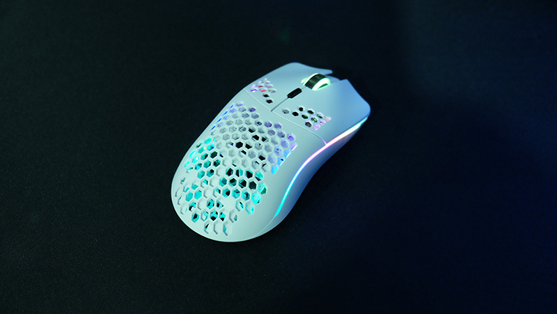

Glorious model O
Glorious Model O är en lättviktsgamingmus som är populär bland e-sportare och entusiaster. Den har en perforerad honungskaksdesign som minskar vikten till cirka 67 gram (för den vanliga modellen) och 58 gram (för Model O- Minus), vilket gör den särskilt lämpad för snabba rörelser och precisionsspel. Musen använder en Pixart 3360-sensor med upp till 12 000 DPI, vilket ger hög noggrannhet och responsivitet. Den har också Omron-brytare med en hållbarhet på 20 miljoner klick och en flexibel "Ascended Cord"-kabel som efterliknar en trådlös känsla. Model O kommer med anpassningsbar RGB-belysning och mjukvara för DPI-inställningar och makron.